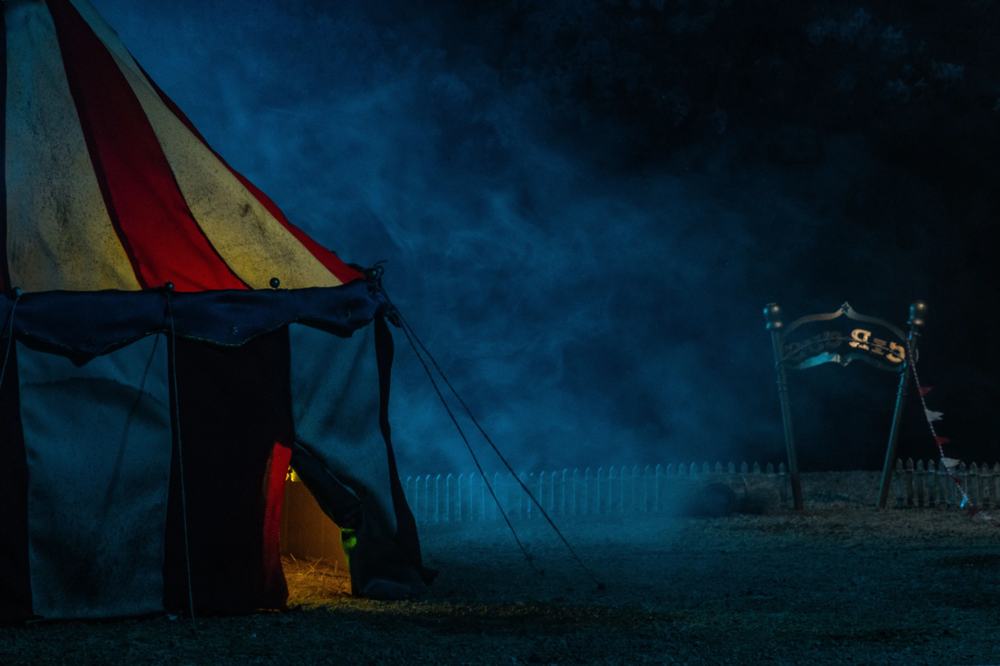

Circus
The goal of this university project was to create an old fashioned circus model.
My teammates and I used scrap cardboard and foam to create the base of the model. To recreate the tent we dyed an old sheet and we sewed it to make the tent shape. After that, we took some gravel from the street and mixed it with glue to make it look like the fair grounds. We also used old ice cream sticks to make the fence and the base of the sign, for the sign letters we used a 3D printer. Lastly, we grabbed water with dirt and sprayed the whole thing to make it look older and dirty.
When we were taking the photos we used a flashlight to simulate the lighting of the tent and one of the teammates smoking a vape to recreate the mist.
